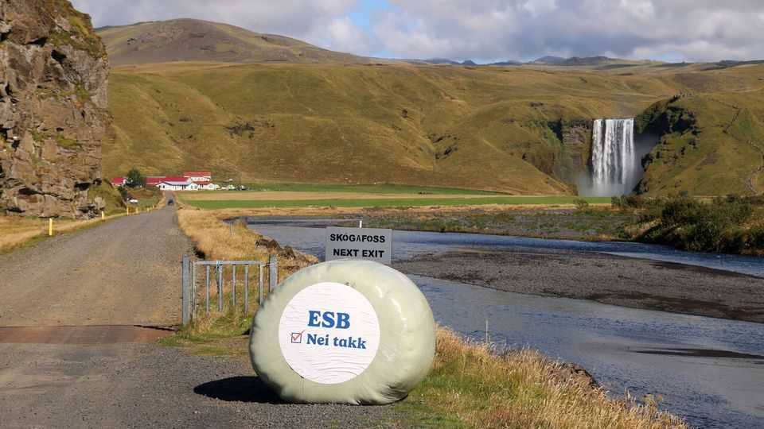

EU enlargement hits an Icelandic snag
A no vote on joining the EU was more about fish than geopolitics

Sep 3rd 2026
THE FIRST week of September is when European officialdom returns from a summer spent at the beach, rested and raring to take on the continent’s challenges. Alas, the mood of the rentrée has been marred by an unexpected snub from the mid-Atlantic. In a referendum on August 29th Icelanders voted narrowly not to reopen negotiations to join the European Union. Though the vote hinged largely on local concerns, it was an unwelcome back-to-work surprise for Brussels types. For a club accustomed to discussing how quickly others might join, being told “no thanks” is discomfiting.
Outsiders might have expected Iceland’s referendum to turn on the great geopolitical questions of the age. War is raging in Europe and Iceland’s neighbour Greenland is coveted by Donald Trump, the American president whose ambassador in Reykjavik once joked that the two islands could become America’s 51st and 52nd states. Most countries that can join alliances to protect themselves are doing so. Sweden and Finland became members of NATO soon after Russia invaded Ukraine. Ukraine has applied to join both NATO and the EU; and Canada—another country Mr Trump imagines as a future American state—is trying to get closer to the bloc. Iceland, which is already a NATO member, might seem an obvious candidate for the EU as well.
But all referendums are local. Iceland’s fishing industry, which accounts for almost 40% of the country’s goods exports, led the charge against EU membership. Fishing interests had derailed Iceland’s previous plan to join the union in 2013, after the country had suffered a crippling financial crisis. This time they made the same argument: the union’s rules would allow other countries’ vessels into Icelandic waters and impose caps on fishing that would hurt exports. The movement against joining was bolstered by a belief that Iceland can prosper on its own, and that existing arrangements with the EU—along with the country’s membership in NATO—are sufficient.
It wasn’t just the fish. Only inside Reykjavik, the capital, did most voters back restarting negotiations to join the EU; everywhere else, there was a clear majority against. Farmers fretted about competition and loss of government subsidies. Employers and some unions stood against it, too. That turned out to be more convincing than the campaign in favour, which claimed that a tiny island nation needs formal membership in a wider union to thrive.
The EU will no doubt play down the snub. Iceland has only 400,000 people—just 0.1% of the EU population, fewer than any current member. It is already in the European Economic Area, a sort of outer tier of the EU, and forms part of Schengen, the bloc’s passport-free travel scheme. The referendum was merely to reopen the negotiations that were suspended in 2013, after a change of government. The renewed talks might have failed anyway.
But this will be scant consolation for a union that has prided itself on its attractiveness to outsiders. Ten countries with a combined population of 150m have formally applied to join the union (though talks with Turkey, the largest, have been frozen for years). All of them are poor, most have dysfunctional politics and one (Ukraine) is at war. This weekend’s vote is a reminder that richer potential members of the EU, such as Switzerland and Norway, are in no rush to join.
It is a point of pride in Brussels that while Mr Trump threatens his neighbours with takeovers, the EU has such appeal that neighbouring countries are clamouring to join. Someone forgot to tell the Icelanders.■